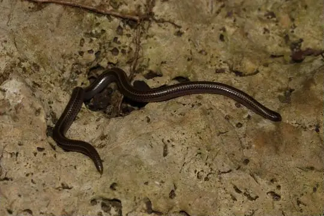

Snakes of France
28 snake species are recorded in France in SnakeList: 7 venomous and 21 non-venomous, from 7 families.
- 28species
- 7venomous
- 21non-venomous
- 7families
These totals count the snakes SnakeList records as living in France, including 3 extinct or fossil species. Territories that SnakeList lists as places of their own (French Guiana, New Caledonia, Saint Barthélemy, Saint Martin) have their own pages and are not counted here. A species counts if it is recorded anywhere in the country, so not every snake lives in every region.
Species
Showing 28 species
 Aesculapian SnakeZamenis longissimus
Aesculapian SnakeZamenis longissimus Asp ViperVipera aspis
Asp ViperVipera aspis Balkan Whip SnakeHierophis gemonensis
Balkan Whip SnakeHierophis gemonensis Dark green snakeColuber viridiflavus
Dark green snakeColuber viridiflavus Dice SnakeNatrix tessellata
Dice SnakeNatrix tessellata- No photo yetEudeline's Worm SnakeMadatyphlops eudelini
 European AdderVipera berus
European AdderVipera berus- No photo yetFranceses island-LanceheadBothrops sazimai
 Grass SnakeNatrix natrix
Grass SnakeNatrix natrix Grass Snake (helvetica)Natrix helvetica
Grass Snake (helvetica)Natrix helvetica- No photo yetGuadeloupe Worm SnakeAntillotyphlops guadeloupensis
 Iberian Grass SnakeNatrix astreptophora
Iberian Grass SnakeNatrix astreptophora Ladder SnakeZamenis scalaris
Ladder SnakeZamenis scalaris Martinique LanceheadBothrops lanceolatus
Martinique LanceheadBothrops lanceolatus Meadow ViperVipera ursinii
Meadow ViperVipera ursinii Montpellier snakeMalpolon monspessulanus
Montpellier snakeMalpolon monspessulanus Peters' Bright SnakeLiophidium mayottensis
Peters' Bright SnakeLiophidium mayottensis Seoane's ViperVipera seoanei
Seoane's ViperVipera seoanei Smooth SnakeCoronella austriaca
Smooth SnakeCoronella austriaca Southern Smooth SnakeCoronella girondica
Southern Smooth SnakeCoronella girondica Terre-de-Bas RacerAlsophis danforthi
Terre-de-Bas RacerAlsophis danforthi Terre-de-Haut RacerAlsophis sanctonum
Terre-de-Haut RacerAlsophis sanctonum
Two-lined Blind SnakeTetracheilostoma bilineatum Viperine SnakeNatrix maura
Viperine SnakeNatrix maura Western Whip SnakeHierophis viridiflavus
Western Whip SnakeHierophis viridiflavus- Known from fossilsCadurceryx filholi
- Known from fossilsColuber cadurci
- Known from fossilsNatrix longivertebrata
No snakes in France match.
France’s snakes in numbers
- Families: Colubridae 16, Viperidae 6, Typhlopidae 2, Boidae 1, Leptotyphlopidae 1, Psammophiidae 1, Pseudoxyrhophiidae 1.
- 9 are recorded in no other country in SnakeList: Eudeline's Worm Snake, Guadeloupe Worm Snake, Martinique Lancehead, Peters' Bright Snake, Terre-de-Bas Racer, Terre-de-Haut Racer, Two-lined Blind Snake, Cadurceryx filholi, Coluber cadurci.
- 3 are extinct or known only from fossils.
States and provinces
The states and provinces where SnakeList records snakes, with how many species each has. Each page has its families, venomous snakes, the species found only there, its cities and neighbours.
- Auvergne-Rhône-Alpes 11 species
- Bourgogne-Franche-Comté 7 species
- Bretagne 5 species
- Centre-Val de Loire 7 species
- Corse 1 species
- Grand Est 5 species
- Guadeloupe 3 species
- Hauts-de-France 3 species
- Île-de-France 5 species
- Martinique 2 species
- Mayotte 2 species
- Normandie 5 species
- Nouvelle-Aquitaine 9 species
- Occitanie 11 species
- Pays de la Loire 7 species
- Provence-Alpes-Côte-d'Azur 10 species
No place matches that.
Cities
Its biggest cities, biggest first. Snakes are recorded by state or province, not by city, so each city page shows the snakes of the state or province it is in.